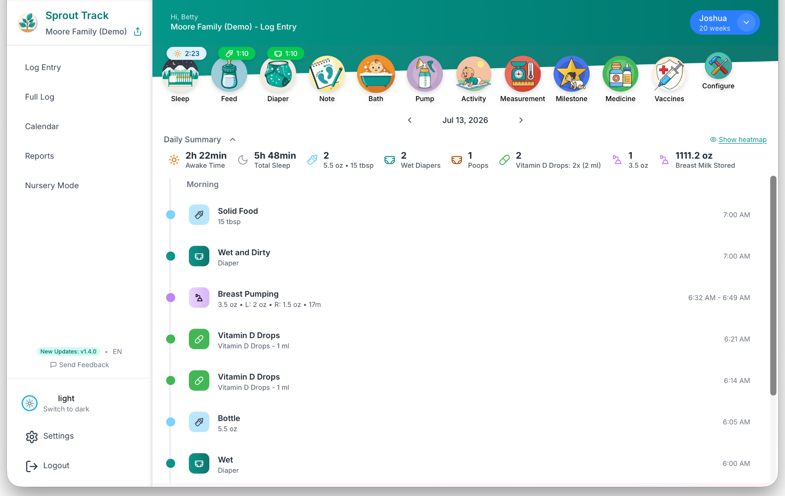

Sprout Track logs sleep, feeds, diapers, and everything between, for every caretaker in the house. No ads, no analytics brokers, and the entire codebase is public. Run it on our servers or yours.
14 days free · no card · then $2.99/mo · cancel anytime
322 github stars70+ families100% source available
# hosted: nothing to install. # prefer your own hardware? $ git clone Oak-and-Sprout/sprout-track $ docker compose up -d → sprout-track running on :3000 → your data, your disk, your rules

the actual app — log entry view, Moore family demo
Your logs are yours. Take a full export whenever you want, or skip our hosting entirely and run the same app from a Docker container on your NAS.
The code that runs sprout-track.com is the code on GitHub. Read it, patch it, self-host it. If we ever disappear, your tracker doesn’t.
Parents, grandparents, and the nanny log into the same timeline with a link and a PIN. Every entry records who logged it. No per-seat pricing, ever.
A web app that loads fast on any device, works one-handed at 3 am, and has a dimmed nursery mode for the crib-side tablet. No gamification, no streaks, no upsells.
Everything ships to every plan, including the free self-hosted one.
Mount a tablet by the crib. Big tap targets for feed, pump, diaper, and sleep; adjustable dim and hue; a wake lock so the screen never dies mid-change.

14-day free trial · or $19.99 lifetime
docker compose up -d
Two minutes to set up. Fourteen days to decide. $2.99 after that.
no card required · cancel anytime